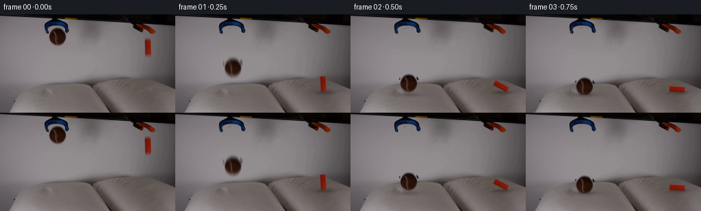
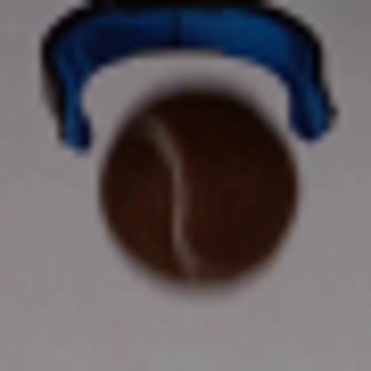
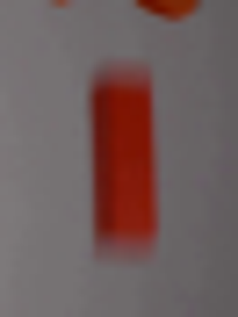
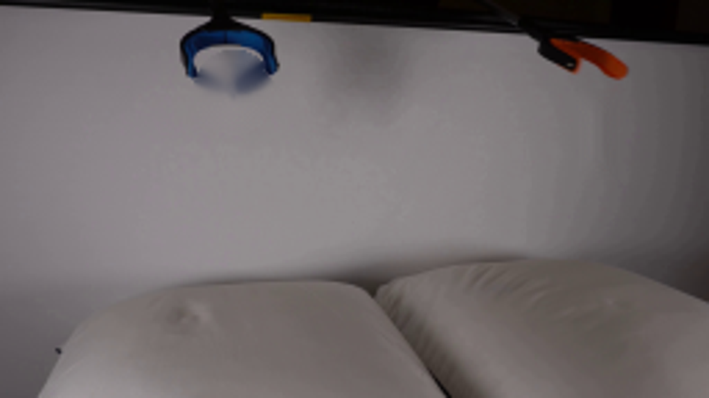
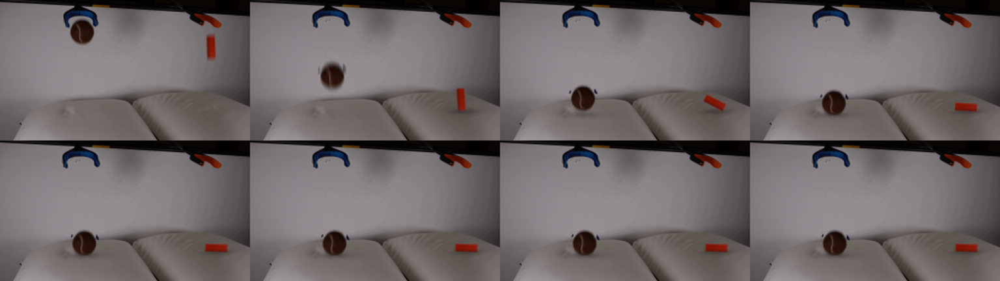
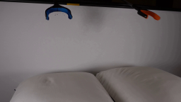
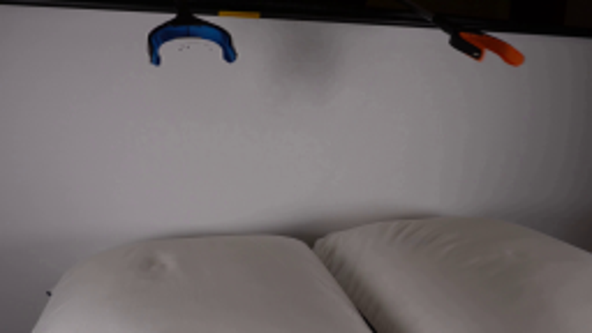
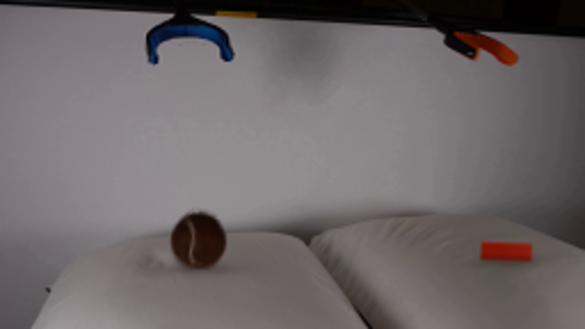

CODING AGENTS AS PIXEL WORLD MODELS
traex/GPT-6-Astra · 0001
点击播放 · 原生 RGB 像素
逐轮保存的候选
回放视频、检查图与代码变化。
每份候选均可单独播放。实际图片检查记录在下方工具轨迹中。
候选 01播放与检查图
点击播放 · 原生 RGB 像素

展开代码变化
--- 上一保存版本
+++ 本次保存版本
@@ -0,0 +1,203 @@
+from pathlib import Path
+import numpy as np
+from PIL import Image, ImageDraw
+import cv2
+from scipy.ndimage import gaussian_filter
+import artifact_io
+
+ROOT=Path(__file__).resolve().parent
+W,H=256,144
+source=np.array(Image.open(ROOT/'first_frame.png').convert('RGB'),dtype=np.float32)
+Y,X=np.mgrid[:H,:W].astype(np.float32)
+rng=np.random.default_rng(1729)
+
+# Reconstruct only the small pieces of stationary wall revealed by the release.
+def wall_fit(cx,cy,rx,ry,region,valid):
+ xx=(X-cx)/rx; yy=(Y-cy)/ry
+ basis=np.stack([np.ones_like(X),xx,yy,xx*xx,xx*yy,yy*yy],axis=-1)
+ a=basis[region & valid]; b=source[region & valid]
+ coef=np.linalg.lstsq(a,b,rcond=None)[0]
+ return basis@coef
+
+bd=np.sqrt(((X-83.7)/12.65)**2+((Y-32.5)/12.8)**2)
+ball_region=(X>62)&(X<107)&(Y>=17)&(Y<=56)
+ball_valid=(bd>1.24)&(source[:,:,0]>110)&(source[:,:,2]-source[:,:,1]<8)&((Y>30)|((X>72)&(X<93)))
+ball_wall=wall_fit(84,33,24,25,ball_region,ball_valid)
+# Color unmixing keeps the fuzzy felt edge, without a gray wall-colored fringe.
+ball_alpha=np.clip((ball_wall[:,:,1]-source[:,:,1])/(ball_wall[:,:,1]-19),0,1)
+ball_alpha=np.where(bd<.80,1,ball_alpha)
+ball_alpha*=np.clip((1.27-bd)/.10,0,1)
+ball_alpha*=((Y>=18)&ball_region)
+ball_alpha=np.where(ball_alpha<.008,0,ball_alpha)
+ball_color=(source-ball_wall*(1-ball_alpha[:,:,None]))/np.maximum(ball_alpha[:,:,None],.025)
+ball_color=np.clip(ball_color,0,255)
+
+block_region=(X>=200)&(X<=230)&(Y>=29)&(Y<=69)
+block_valid=((X<209)|(X>223))
+block_wall=wall_fit(216,48,18,24,block_region,block_valid)
+block_alpha=np.clip((block_wall[:,:,2]-source[:,:,2])/(block_wall[:,:,2]-8),0,1)
+block_alpha*=((X>=210)&(X<=222)&(Y>=32)&(Y<=64))
+block_alpha=np.where(block_alpha<.015,0,block_alpha)
+block_color=(source-block_wall*(1-block_alpha[:,:,None]))/np.maximum(block_alpha[:,:,None],.03)
+block_color=np.clip(block_color,0,255)
+
+background=source.copy()
+ball_removal=np.clip((1.30-bd)/.13,0,1)*ball_region
+# Do not disturb either blue jaw.
+ball_removal*=np.clip((source[:,:,1]-source[:,:,2]+10)/5,0,1)
+ball_removal[(Y<20)&(bd>1.10)]=0
+noise=rng.normal(0,.43,(H,W,1)).astype(np.float32)
+background=background*(1-ball_removal[:,:,None])+(ball_wall+noise)*ball_removal[:,:,None]
+block_removal=np.zeros((H,W),np.float32)
+block_removal[32:65,210:223]=1
+block_removal=gaussian_filter(block_removal,.5)
+background=background*(1-block_removal[:,:,None])+(block_wall+noise)*block_removal[:,:,None]
+
+# The lower ends of the empty blue jaws relax slightly outward after release.
+def open_jaws(img):
+ s=np.clip((Y-8)/19,0,1)*np.clip((34-Y)/6,0,1)
+ s*=np.clip((X-58)/6,0,1)*np.clip((108-X)/7,0,1)
+ sx=83+(X-83)/(1+.145*s)
+ return cv2.remap(img,sx.astype(np.float32),Y,cv2.INTER_CUBIC,borderMode=cv2.BORDER_REFLECT)
+background=open_jaws(background)
+
+# Premultiplied textures, cut from the observed objects, not replacement assets.
+ball_rgba=np.concatenate([ball_color*ball_alpha[:,:,None],ball_alpha[:,:,None]],axis=2)[16:50,67:102].copy()
+# Remove the velocity streak at the two ends of the orange block for its rest pose.
+# A short cuboid keeps the front's photographed color and tiny surface variations.
+S=4
+bw,bh=36,40
+by,bx=np.mgrid[:bh*S,:bw*S].astype(np.float32)
+bx=bx/S-18; by=by/S-20
+# Front face is a lightly tapered rectangle, with a slim darker side face.
+left=-4.15+.014*by; right=4.2+.014*by
+bcore=np.clip(np.minimum.reduce([bx-left,right-bx,by+11.1,11.1-by])/.35+.5,0,1)
+mapx=(216+bx).astype(np.float32)
+mapy=(48+by*.69).astype(np.float32)
+bc=cv2.remap(source,mapx,mapy,cv2.INTER_CUBIC,borderMode=cv2.BORDER_REFLECT)
+bc=np.clip(bc,0,255)
+# A small top facet and side facet give the small object its rectangular volume.
+top=np.clip((-by-9.7)/1.3,0,1)
+bc=bc*(1-.15*top[:,:,None])+np.array([158,46,18],np.float32)*(.15*top[:,:,None])
+block_rgba=np.concatenate([bc*bcore[:,:,None],bcore[:,:,None]],axis=2)
+block_rgba=cv2.GaussianBlur(block_rgba,(0,0),1.45)
+block_rgba=cv2.resize(block_rgba,(bw,bh),interpolation=cv2.INTER_AREA)
+
+# Gravity and pillow damping. Time is physical seconds at four samples/second.
+g=1450.0
+ball_surface=116.2
+ball_r=12.7
+ball_hit=np.sqrt(2*(ball_surface-ball_r-32.5)/g)
+block_surface=111.0
+block_hit=(-42+np.sqrt(42**2+2*g*(block_surface-11.1-48)))/g
+
+def ball_pose(t):
+ if t<ball_hit:
+ return 83.7+.7*t,32.5+.5*g*t*t,1,0,0,False
+ u=t-ball_hit
+ # Most kinetic energy goes into the soft pillow. The ball gives one low bounce.
+ if u<.065:
+ dep=4.3*np.sin(np.pi*.5*u/.065)
+ cy=ball_surface-ball_r+dep
+ elif u<.18:
+ f=(u-.065)/.115
+ dep=4.3*(1-f)**2
+ cy=ball_surface-ball_r+dep-2.8*np.sin(f*np.pi/2)
+ elif u<.38:
+ f=(u-.18)/.20
+ dep=1.5*f*f
+ cy=ball_surface-ball_r-2.8+4.3*f*f
+ else:
+ dep=1.7+.40*np.exp(-(u-.38)*8)*np.sin((u-.38)*22)
+ cy=ball_surface-ball_r+dep
+ x=83.7+2.8*(1-np.exp(-u*2.2))
+ angle=10*(1-np.exp(-u*2.4))
+ squash=1-.025*np.exp(-((u-.06)/.07)**2)
+ return x,cy,squash,angle,dep,True
+
+def block_pose(t):
+ if t<block_hit:
+ return 216+.8*t,48+42*t+.5*g*t*t,1.0+8*t,0,False
+ u=t-block_hit
+ # It first strikes on its lower corner, then tips onto its long side.
+ a=1.8+85*(1-np.exp(-(u/.23)**1.8))
+ a+=3*np.exp(-u*4)*np.sin(u*19)
+ a=min(a,89)
+ dep=1.2+2.6*np.exp(-u*13)*np.sin(min(u/.045,1)*np.pi/2)
+ x=216+5.5*(1-np.exp(-u*5))
+ half=11.1*np.cos(np.deg2rad(a))+4.2*np.sin(np.deg2rad(a))
+ # Follow the very gentle rightward slope of the pillow.
+ surf=block_surface+1.8*(1-np.exp(-u*5))
+ return x,surf+dep-half,-a,dep,True
+
+
+def cloth(t,bp,kp):
+ out=background.copy()
+ bx,by,sq,ang,bd,contact=bp
+ kx,ky,ka,kd,kcontact=kp
+ # Local displacements affect the fabric only, never the wall or camera.
+ ds=np.zeros((H,W),np.float32)
+ for cx,cy,depth,sigma in [(bx,ball_surface,bd,14),(kx,block_surface+1,kd,13)]:
+ d=np.exp(-.5*((X-cx)/sigma)**2-.5*((Y-cy)/9)**2)
+ gate=np.clip((Y-(100 if cx<130 else 98))/5,0,1)
+ ds+=depth*.6*d*gate
+ out=cv2.remap(out,X,Y-ds,cv2.INTER_CUBIC,borderMode=cv2.BORDER_REFLECT)
+ # Broad fabric indentation and a soft, height-dependent cast shadow.
+ for cx,cy,rx,depth,alt in [(bx,ball_surface,12.3,bd,max(0,ball_surface-(by+12.7*sq))),
+ (kx,block_surface+1.8,10.5,kd,max(0,block_surface-(ky+11.1)))]:
+ proximity=np.exp(-alt/17)
+ shadow=np.exp(-.5*((X-cx-.8)/(rx+alt*.10))**2-.5*((Y-cy-1)/(2.1+alt*.08))**2)
+ broad=np.exp(-.5*((X-cx)/(rx*1.3))**2-.5*((Y-cy)/(5.6))**2)
+ dark=.23*proximity*shadow + .037*min(depth,3)*broad
+ out*=1-dark[:,:,None]
+ # Very small lifted fabric rim, behind the body.
+ rim=np.exp(-.5*((X-cx)/(rx*1.2))**2-.5*((Y-cy-4.0)/1.2)**2)
+ out+=rim[:,:,None]*(min(depth,3)*.7)
+ return out
+
+
+def place(out,rgba,cx,cy,origin,angle=0,sx=1,sy=1,occlusion=None):
+ theta=np.deg2rad(angle); c,s=np.cos(theta),np.sin(theta)
+ # Positive image-space angle rotates clockwise.
+ M=np.array([[sx*c,-sy*s,0],[sx*s,sy*c,0]],np.float32)
+ M[:,2]=np.array([cx,cy])-M[:,:2]@np.array(origin)
+ warped=cv2.warpAffine(rgba,M,(W,H),flags=cv2.INTER_CUBIC,borderMode=cv2.BORDER_CONSTANT)
+ alpha=np.clip(warped[:,:,3],0,1)
+ rgb=np.clip(warped[:,:,:3],0,255*alpha[:,:,None])
+ if occlusion is not None:
+ alpha*=occlusion
+ rgb*=occlusion[:,:,None]
+ return out*(1-alpha[:,:,None])+rgb
+
+
+def render(t):
+ bp=ball_pose(t); kp=block_pose(t)
+ out=cloth(t,bp,kp)
+ bx,by,sq,ba,dep,contact=bp
+ occlusion=None
+ if contact:
+ lip=ball_surface+.65+dep*.45+.027*(X-bx)**2
+ occlusion=np.clip((lip-Y)/.85+.5,0,1)
+ out=place(out,ball_rgba,bx,by,(83.7-67,32.5-16),ba,1+(1-sq)*.5,sq,occlusion)
+ kx,ky,ka,kd,kcontact=kp
+ out=place(out,block_rgba,kx,ky,(18,20),ka)
+ return np.clip(out,0,255)
+
+
+def main():
+ frames=[source.astype(np.uint8)]
+ for i in range(1,20):
+ t=i/4
+ # A brief shutter exposure preserves natural motion blur on the rapid drop.
+ shutter=.018 if t<.8 else .008
+ img=np.mean([render(t+d) for d in np.linspace(-shutter/2,shutter/2,7)],axis=0)
+ frames.append(np.rint(img).astype(np.uint8))
+ frames=np.stack(frames)
+ artifact_io.save(frames,ROOT)
+ Image.fromarray(np.clip(background,0,255).astype(np.uint8)).save(ROOT/'.tmp/background.png')
+ # Useful contact-stage inspection at source size and enlarged.
+ sheet=Image.new('RGB',(256*4,144*2))
+ for j in range(8): sheet.paste(Image.fromarray(frames[j]),((j%4)*256,(j//4)*144))
+ sheet.resize((1536,432)).save(ROOT/'.tmp/contact_sheet.png')
+
+if __name__=='__main__': main()
候选 02播放与检查图
点击播放 · 原生 RGB 像素

展开代码变化
--- 上一保存版本 +++ 本次保存版本 @@ -28,6 +28,7 @@ ball_alpha=np.where(bd<.80,1,ball_alpha) ball_alpha*=np.clip((1.27-bd)/.10,0,1) ball_alpha*=((Y>=18)&ball_region) +ball_alpha*=np.clip((source[:,:,0]-source[:,:,2])/6,0,1) ball_alpha=np.where(ball_alpha<.008,0,ball_alpha) ball_color=(source-ball_wall*(1-ball_alpha[:,:,None]))/np.maximum(ball_alpha[:,:,None],.025) ball_color=np.clip(ball_color,0,255) @@ -44,7 +45,7 @@ background=source.copy() ball_removal=np.clip((1.30-bd)/.13,0,1)*ball_region # Do not disturb either blue jaw. -ball_removal*=np.clip((source[:,:,1]-source[:,:,2]+10)/5,0,1) +ball_removal*=1-np.clip((source[:,:,2]-source[:,:,0]-12)/10,0,1) ball_removal[(Y<20)&(bd>1.10)]=0 noise=rng.normal(0,.43,(H,W,1)).astype(np.float32) background=background*(1-ball_removal[:,:,None])+(ball_wall+noise)*ball_removal[:,:,None]
候选 03播放与检查图
可观测工具轨迹
实际执行的命令与返回图片。
命令 1exit 0
/bin/bash -lc "ls -la && cat prompt.txt && printf '\\n---RULES---\\n' && cat GENERATION_RULES.md"
命令 2exit 0
/bin/bash -lc "cat artifact_io.py && python - <<'PY'
from PIL import Image
im=Image.open('first_frame.png'); print(im.mode, im.size); im.resize((1024,576)).save('.tmp/large.png')
PY"命令 3exit 0
/bin/bash -lc "python - <<'PY'
from PIL import Image
im=Image.open('first_frame.png')
im.crop((60,10,105,55)).resize((540,540)).save('.tmp/ball_crop.png')
im.crop((199,26,232,70)).resize((396,528)).save('.tmp/block_crop.png')
import importlib.util
for p in ['numpy','scipy','cv2','PIL']:
print(p, bool(importlib.util.find_spec(p)))
PY"命令 4exit 0
/bin/bash -lc "python - <<'PY'
from PIL import Image
import numpy as np
im=np.array(Image.open('first_frame.png'))
for y in [35,36,38,40,45,48,50,55,58,60]:
print(y,[(x,im[y,x].tolist()) for x in [210,211,212,213,214,216,218,219,220,221]])
PY"命令 5exit 0
/bin/bash -lc "python - <<'PY'
from PIL import Image
import numpy as np
im=np.array(Image.open('first_frame.png'))
for y in [18,19,20,21,22,24,28,32,36,40,43,44,45,46,47]:
print(y,[(x,im[y,x].tolist()) for x in [70,71,72,73,74,76,80,84,88,92,94,95,96,97]])
PY"命令 6exit 0
/bin/bash -lc "cat > .tmp/test_extract.py <<'PY'
import cv2
import numpy as np
from PIL import Image
im=np.array(Image.open('first_frame.png')).astype(float)
h,w=im.shape[:2]; yy,xx=np.mgrid[:h,:w]
mask=((xx-84.0)**2/14.6**2+(yy-32.8)**2/15.5**2<1)&(im[:,:,2]<im[:,:,1]+9)
# avoid the tool's blue arms
mask &= (yy>=18)
mask2=(xx>=209)&(xx<=222)&(yy>=32)&(yy<=64)
mask=mask|mask2
bg=cv2.inpaint(im.astype(np.uint8), mask.astype(np.uint8)*255, 5, cv2.INPAINT_TELEA)
Image.fromarray(bg).resize((1024,576)).save('.tmp/clean.png')
PY
python .tmp/test_extract.py"命令 7exit 0
/bin/bash -lc "cat > generate.py <<'PY'
from pathlib import Path
import numpy as np
from PIL import Image, ImageDraw
import cv2
from scipy.ndimage import gaussian_filter
import artifact_io
ROOT=Path(__file__).resolve().parent
W,H=256,144
source=np.array(Image.open(ROOT/'first_frame.png').convert('RGB'),dtype=np.float32)
Y,X=np.mgrid[:H,:W].astype(np.float32)
rng=np.random.default_rng(1729)
# Reconstruct only the small pieces of stationary wall revealed by the release.
def wall_fit(cx,cy,rx,ry,region,valid):
xx=(X-cx)/rx; yy=(Y-cy)/ry
basis=np.stack([np.ones_like(X),xx,yy,xx*xx,xx*yy,yy*yy],axis=-1)
a=basis[region & valid]; b=source[region & valid]
coef=np.linalg.lstsq(a,b,rcond=None)[0]
return basis@coef
bd=np.sqrt(((X-83.7)/12.65)**2+((Y-32.5)/12.8)**2)
ball_region=(X>62)&(X<107)&(Y>=17)&(Y<=56)
ball_valid=(bd>1.24)&(source[:,:,0]>110)&(source[:,:,2]-source[:,:,1]<8)&((Y>30)|((X>72)&(X<93)))
ball_wall=wall_fit(84,33,24,25,ball_region,ball_valid)
# Color unmixing keeps the fuzzy felt edge, without a gray wall-colored fringe.
ball_alpha=np.clip((ball_wall[:,:,1]-source[:,:,1])/(ball_wall[:,:,1]-19),0,1)
ball_alpha=np.where(bd<.80,1,ball_alpha)
ball_alpha*=np.clip((1.27-bd)/.10,0,1)
ball_alpha*=((Y>=18)&ball_region)
ball_alpha=np.where(ball_alpha<.008,0,ball_alpha)
ball_color=(source-ball_wall*(1-ball_alpha[:,:,None]))/np.maximum(ball_alpha[:,:,None],.025)
ball_color=np.clip(ball_color,0,255)
block_region=(X>=200)&(X<=230)&(Y>=29)&(Y<=69)
block_valid=((X<209)|(X>223))
block_wall=wall_fit(216,48,18,24,block_region,block_valid)
block_alpha=np.clip((block_wall[:,:,2]-source[:,:,2])/(block_wall[:,:,2]-8),0,1)
block_alpha*=((X>=210)&(X<=222)&(Y>=32)&(Y<=64))
block_alpha=np.where(block_alpha<.015,0,block_alpha)
block_color=(source-block_wall*(1-block_alpha[:,:,None]))/np.maximum(block_alpha[:,:,None],.03)
block_color=np.clip(block_color,0,255)
background=source.copy()
ball_removal=np.clip((1.30-bd)/.13,0,1)*ball_region
# Do not disturb either blue jaw.
ball_removal*=np.clip((source[:,:,1]-source[:,:,2]+10)/5,0,1)
ball_removal[(Y<20)&(bd>1.10)]=0
noise=rng.normal(0,.43,(H,W,1)).astype(np.float32)
background=background*(1-ball_removal[:,:,None])+(ball_wall+noise)*ball_removal[:,:,None]
block_removal=np.zeros((H,W),np.float32)
block_removal[32:65,210:223]=1
block_removal=gaussian_filter(block_removal,.5)
background=background*(1-block_removal[:,:,None])+(block_wall+noise)*block_removal[:,:,None]
# The lower ends of the empty blue jaws relax slightly outward after release.
def open_jaws(img):
s=np.clip((Y-8)/19,0,1)*np.clip((34-Y)/6,0,1)
s*=np.clip((X-58)/6,0,1)*np.clip((108-X)/7,0,1)
sx=83+(X-83)/(1+.145*s)
return cv2.remap(img,sx.astype(np.float32),Y,cv2.INTER_CUBIC,borderMode=cv2.BORDER_REFLECT)
background=open_jaws(background)
# Premultiplied textures, cut from the observed objects, not replacement assets.
ball_rgba=np.concatenate([ball_color*ball_alpha[:,:,None],ball_alpha[:,:,None]],axis=2)[16:50,67:102].copy()
# Remove the velocity streak at the two ends of the orange block for its rest pose.
# A short cuboid keeps the front's photographed color and tiny surface variations.
S=4
bw,bh=36,40
by,bx=np.mgrid[:bh*S,:bw*S].astype(np.float32)
bx=bx/S-18; by=by/S-20
# Front face is a lightly tapered rectangle, with a slim darker side face.
left=-4.15+.014*by; right=4.2+.014*by
bcore=np.clip(np.minimum.reduce([bx-left,right-bx,by+11.1,11.1-by])/.35+.5,0,1)
mapx=(216+bx).astype(np.float32)
mapy=(48+by*.69).astype(np.float32)
bc=cv2.remap(source,mapx,mapy,cv2.INTER_CUBIC,borderMode=cv2.BORDER_REFLECT)
bc=np.clip(bc,0,255)
# A small top facet and side facet give the small object its rectangular volume.
top=np.clip((-by-9.7)/1.3,0,1)
bc=bc*(1-.15*top[:,:,None])+np.array([158,46,18],np.float32)*(.15*top[:,:,None])
block_rgba=np.concatenate([bc*bcore[:,:,None],bcore[:,:,None]],axis=2)
block_rgba=cv2.GaussianBlur(block_rgba,(0,0),1.45)
block_rgba=cv2.resize(block_rgba,(bw,bh),interpolation=cv2.INTER_AREA)
# Gravity and pillow damping. Time is physical seconds at four samples/second.
g=1450.0
ball_surface=116.2
ball_r=12.7
ball_hit=np.sqrt(2*(ball_surface-ball_r-32.5)/g)
block_surface=111.0
block_hit=(-42+np.sqrt(42**2+2*g*(block_surface-11.1-48)))/g
def ball_pose(t):
if t<ball_hit:
return 83.7+.7*t,32.5+.5*g*t*t,1,0,0,False
u=t-ball_hit
# Most kinetic energy goes into the soft pillow. The ball gives one low bounce.
if u<.065:
dep=4.3*np.sin(np.pi*.5*u/.065)
cy=ball_surface-ball_r+dep
elif u<.18:
f=(u-.065)/.115
dep=4.3*(1-f)**2
cy=ball_surface-ball_r+dep-2.8*np.sin(f*np.pi/2)
elif u<.38:
f=(u-.18)/.20
dep=1.5*f*f
cy=ball_surface-ball_r-2.8+4.3*f*f
else:
dep=1.7+.40*np.exp(-(u-.38)*8)*np.sin((u-.38)*22)
cy=ball_surface-ball_r+dep
x=83.7+2.8*(1-np.exp(-u*2.2))
angle=10*(1-np.exp(-u*2.4))
squash=1-.025*np.exp(-((u-.06)/.07)**2)
return x,cy,squash,angle,dep,True
def block_pose(t):
if t<block_hit:
return 216+.8*t,48+42*t+.5*g*t*t,1.0+8*t,0,False
u=t-block_hit
# It first strikes on its lower corner, then tips onto its long side.
a=1.8+85*(1-np.exp(-(u/.23)**1.8))
a+=3*np.exp(-u*4)*np.sin(u*19)
a=min(a,89)
dep=1.2+2.6*np.exp(-u*13)*np.sin(min(u/.045,1)*np.pi/2)
x=216+5.5*(1-np.exp(-u*5))
half=11.1*np.cos(np.deg2rad(a))+4.2*np.sin(np.deg2rad(a))
# Follow the very gentle rightward slope of the pillow.
surf=block_surface+1.8*(1-np.exp(-u*5))
return x,surf+dep-half,-a,dep,True
def cloth(t,bp,kp):
out=background.copy()
bx,by,sq,ang,bd,contact=bp
kx,ky,ka,kd,kcontact=kp
# Local displacements affect the fabric only, never the wall or camera.
ds=np.zeros((H,W),np.float32)
for cx,cy,depth,sigma in [(bx,ball_surface,bd,14),(kx,block_surface+1,kd,13)]:
d=np.exp(-.5*((X-cx)/sigma)**2-.5*((Y-cy)/9)**2)
gate=np.clip((Y-(100 if cx<130 else 98))/5,0,1)
ds+=depth*.6*d*gate
out=cv2.remap(out,X,Y-ds,cv2.INTER_CUBIC,borderMode=cv2.BORDER_REFLECT)
# Broad fabric indentation and a soft, height-dependent cast shadow.
for cx,cy,rx,depth,alt in [(bx,ball_surface,12.3,bd,max(0,ball_surface-(by+12.7*sq))),
(kx,block_surface+1.8,10.5,kd,max(0,block_surface-(ky+11.1)))]:
proximity=np.exp(-alt/17)
shadow=np.exp(-.5*((X-cx-.8)/(rx+alt*.10))**2-.5*((Y-cy-1)/(2.1+alt*.08))**2)
broad=np.exp(-.5*((X-cx)/(rx*1.3))**2-.5*((Y-cy)/(5.6))**2)
dark=.23*proximity*shadow + .037*min(depth,3)*broad
out*=1-dark[:,:,None]
# Very small lifted fabric rim, behind the body.
rim=np.exp(-.5*((X-cx)/(rx*1.2))**2-.5*((Y-cy-4.0)/1.2)**2)
out+=rim[:,:,None]*(min(depth,3)*.7)
return out
def place(out,rgba,cx,cy,origin,angle=0,sx=1,sy=1,occlusion=None):
theta=np.deg2rad(angle); c,s=np.cos(theta),np.sin(theta)
# Positive image-space angle rotates clockwise.
M=np.array([[sx*c,-sy*s,0],[sx*s,sy*c,0]],np.float32)
M[:,2]=np.array([cx,cy])-M[:,:2]@np.array(origin)
warped=cv2.warpAffine(rgba,M,(W,H),flags=cv2.INTER_CUBIC,borderMode=cv2.BORDER_CONSTANT)
alpha=np.clip(warped[:,:,3],0,1)
rgb=np.clip(warped[:,:,:3],0,255*alpha[:,:,None])
if occlusion is not None:
alpha*=occlusion
rgb*=occlusion[:,:,None]
return out*(1-alpha[:,:,None])+rgb
def render(t):
bp=ball_pose(t); kp=block_pose(t)
out=cloth(t,bp,kp)
bx,by,sq,ba,dep,contact=bp
occlusion=None
if contact:
lip=ball_surface+.65+dep*.45+.027*(X-bx)**2
occlusion=np.clip((lip-Y)/.85+.5,0,1)
out=place(out,ball_rgba,bx,by,(83.7-67,32.5-16),ba,1+(1-sq)*.5,sq,occlusion)
kx,ky,ka,kd,kcontact=kp
out=place(out,block_rgba,kx,ky,(18,20),ka)
return np.clip(out,0,255)
def main():
frames=[source.astype(np.uint8)]
for i in range(1,20):
t=i/4
# A brief shutter exposure preserves natural motion blur on the rapid drop.
shutter=.018 if t<.8 else .008
img=np.mean([render(t+d) for d in np.linspace(-shutter/2,shutter/2,7)],axis=0)
frames.append(np.rint(img).astype(np.uint8))
frames=np.stack(frames)
artifact_io.save(frames,ROOT)
Image.fromarray(np.clip(background,0,255).astype(np.uint8)).save(ROOT/'.tmp/background.png')
# Useful contact-stage inspection at source size and enlarged.
sheet=Image.new('RGB',(256*4,144*2))
for j in range(8): sheet.paste(Image.fromarray(frames[j]),((j%4)*256,(j//4)*144))
sheet.resize((1536,432)).save(ROOT/'.tmp/contact_sheet.png')
if __name__=='__main__': main()
PY
OPENBLAS_NUM_THREADS=1 python generate.py"命令 8exit 0
/bin/bash -lc "python - <<'PY'
from PIL import Image
Image.open('.tmp/background.png').resize((1024,576)).save('.tmp/bg_large.png')
Image.open('frames/08.png').resize((1024,576)).save('.tmp/rest_large.png')
PY"命令 9exit 0
/bin/bash -lc "python - <<'PY'
p='generate.py'
s=open(p).read().replace('ball_alpha*=((Y>=18)&ball_region)','ball_alpha*=((Y>=18)&ball_region)\\nball_alpha*=np.clip((source[:,:,0]-source[:,:,2])/6,0,1)')
s=s.replace('ball_removal*=np.clip((source[:,:,1]-source[:,:,2]+10)/5,0,1)','ball_removal*=1-np.clip((source[:,:,2]-source[:,:,0]-12)/10,0,1)')
open(p,'w').write(s)
PY
OPENBLAS_NUM_THREADS=1 python generate.py
python - <<'PY'
from PIL import Image
Image.open('frames/08.png').resize((1024,576)).save('.tmp/rest_large.png')
PY"命令 10exit 0
/bin/bash -lc "python - <<'PY'
from pathlib import Path
from PIL import Image
import numpy as np
p=Path('.')
a=np.stack([np.array(Image.open(f)) for f in sorted((p/'frames').glob('*.png'))])
assert a.shape==(20,144,256,3) and a.dtype==np.uint8
assert np.array_equal(a[0],np.array(Image.open('first_frame.png')))
print('Verified 20 RGB frames, 256x144; first frame matches exactly.')
print('Saved:', ', '.join(x for x in ['generate.py','pixels.npz','index.html','inspection.png'] if Path(x).exists()))
PY"视觉工具实际返回图片 1

视觉工具实际返回图片 2

视觉工具实际返回图片 3

视觉工具实际返回图片 4

视觉工具实际返回图片 5

视觉工具实际返回图片 6

视觉工具实际返回图片 7

视觉工具实际返回图片 8
视觉工具实际返回图片 9

保存候选 3 份；完成命令 10 次；可验证图片返回 9 张。原始 API 响应与完整日志保留在本地。